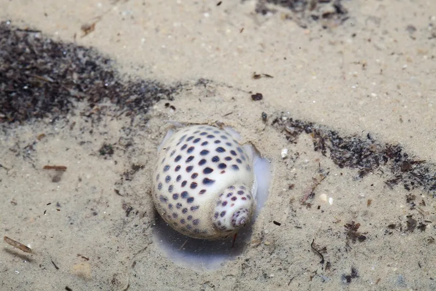

软体动物 · 动物界
斑玉螺 Natica tigrina

壳呈球形、壳面有紫褐色斑点的玉螺，栖息于潮间带沙底，用酸性分泌物在贝壳上钻孔取食，是贝类养殖的敌害。
- 分类
- 门软体动物门纲腹足纲目中腹足目科玉螺科属玉螺属
- 栖息环境
- 潮间带中下区至水深数十米的沙质与沙泥质海底，退潮时钻沙
- 地理分布
- 中国南北沿海、日本、朝鲜半岛和东南亚
- 保护级别
- 尚无保护级别；为蛏、蛤养殖的常见敌害
物种志
斑玉螺的贝壳呈球形，壳高约三至四厘米，壳质坚厚，螺层约五层，壳顶低平，体螺层膨大，壳面黄褐至灰黄色，上面散布紫褐色至黑褐色的斑点和斑块，斑纹排列不规则，像虎皮的斑纹，虎斑玉螺之名由此而来。壳口宽大，呈半圆形，内唇有厚实的胼胝，遮盖脐部，口盖角质，呈半月形。足部极宽大，几乎能包住整个贝壳。
它分布于中国南北沿海、日本、朝鲜半岛和东南亚，栖息在潮间带中下区至水深数十米的沙质和沙泥质海底，靠宽大的足部在沙中潜行，退潮时钻进沙里，涨潮后出来活动。它是凶猛的肉食性螺类，专门捕食双壳类，先用足抱住猎物，再从吻部分泌酸性液体溶解贝壳，钻出一个小圆孔后伸入吻部取食，滩涂上那些带圆孔的空贝壳多半是它的杰作。它雌雄异体，繁殖期在春夏，卵块呈沙泥状附着在沙面。它尚无保护级别，是蛏、蛤养殖的敌害。
形态与习性
- 壳高约三至四厘米，球形，壳质坚厚
- 壳面黄褐底上散布紫褐色斑点
- 栖息水层潮间带中下区至水深数十米的沙底
- 取食方式分泌酸液在贝壳上钻孔后取食
- 食性专食双壳类，是贝类养殖敌害
- 繁殖春夏产卵，卵块呈沙泥状附于沙面
趣味知识
- 滩涂上那些带小圆孔的空贝壳，多半是它钻出来的。
- 它的足宽大得几乎能包住整只壳，在沙里潜行像一块滑动的肉。
- 它专挑蛏子和蛤蜊下手，是养殖户最头疼的螺类之一。